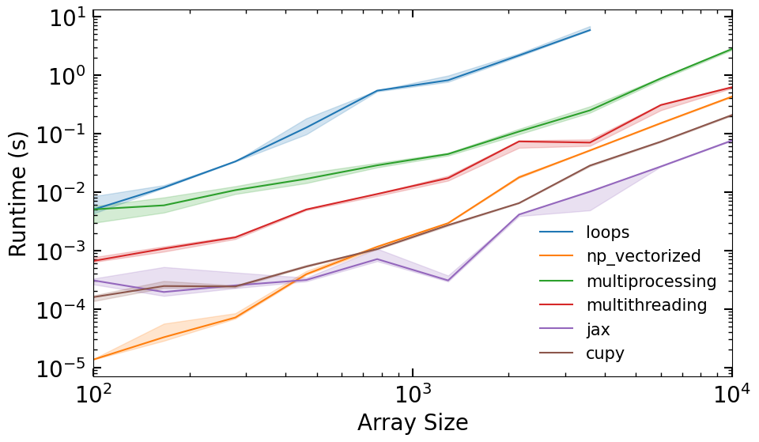

Py Parallelization Basics#
%load_ext autoreload
%autoreload 2
Vectorization#
Lets start with a simple vectorization example
import numpy as np
from time import process_time
import matplotlib.pyplot as plt
from tqdm.auto import tqdm
import warnings
# not returning anything here, just doing the computation
def fn(x):
val = x + x * x + x * x * x
pass
def runtime_loops(x):
t0 = process_time()
rows, cols = x.shape
for i in range(rows):
for j in range(cols):
fn(x[i, j])
return process_time() - t0
def runtime_np_vectorized(x):
t0 = process_time()
fn(x)
return process_time() - t0
N = 1000
x = np.random.randn(N, N).astype(dtype='float32')
print(f"Loops: {runtime_loops(x):.3f}s")
print(f"Vectorized: {runtime_np_vectorized(x):.3f}s")
Multiprocessing and Multithreading#
For multiprocessing and multithreading, things will work better if you first save the code to file, and then import the functions. This is because the multiprocessing module will need to import the code in a new process, and it will not be able to find the functions if they are defined in a notebook cell.
%%writefile basics_multi_demo.py
import multiprocessing as mp
from time import process_time
N_CPUS = mp.cpu_count()
def fn(x):
val = x + x * x + x * x * x
pass
def runtime_multiprocessing(x, processes=N_CPUS):
pool = mp.Pool(processes=processes)
t0 = process_time()
pool.map(fn, x)
return process_time() - t0
def runtime_multithreading(x,processes=N_CPUS):
pool = mp.pool.ThreadPool(processes=processes)
t0 = process_time()
pool.map(fn, x)
return process_time() - t0
from basics_multi_demo import runtime_multiprocessing, runtime_multithreading
print(f"Loops: {runtime_loops(x):.3f}s")
print(f"Multiprocessing: {runtime_multiprocessing(x):.3f}s")
print(f"Multithreading: {runtime_multithreading(x):.3f}s")
Why is one slower?
Multithreading is more lightweight because most system and memory resources are shared by the threads. BUT there is overhead associated with managing threads, so you don’t want to use it for basic tasks.
In addition, the fact that multiple threads all access a shared pool of memory is extremely convenient for numerical programming.
On the other hand, multiprocessing is more flexible and can be distributed across clusters.
Generally multithreading is best suited for I/O-bound tasks, while multiprocessing is best suited for CPU-bound tasks.
NOTE: On Colab, this may not work as expected…
GPU + TPU#
Lets test two GPU, graphics processing unit, libraries, CuPy and JAX (JAX works with TPUs, tensor processing units as well).
On Colab you may need to change your runntime to use a GPU:
> Runtime -> Change runtime type -> Hardware accelerator -> GPU
try:
import cupy as cp
# Check the current device
print(f"CuPy platform: {cp.cuda.Device()}")
CUPY_INSTALLED = True
except ImportError:
CUPY_INSTALLED = False
warnings.warn("Cupy not installed")
try:
import jax.numpy as jnp
from jax import jit
from jax.lib import xla_bridge
print(f"JAX platform: {xla_bridge.get_backend().platform}")
JAX_INSTALLED = True
except ImportError:
JAX_INSTALLED = False
warnings.warn("Jax not installed")
if JAX_INSTALLED:
jax_fn = jit(fn)
def runtime_jax(x):
if not JAX_INSTALLED:
return np.nan
x = jnp.array(x)
t0 = process_time()
jax_fn(x).block_until_ready()
return process_time() - t0
def runtime_cupy(x):
if not CUPY_INSTALLED:
return np.nan
x = cp.array(x)
t0 = process_time()
fn(x)
return process_time() - t0
print(f"Loops: {runtime_loops(x):.3f}s")
print(f"CuPy: {runtime_cupy(x):.3f}s")
print(f"JAX: {runtime_jax(x):.3f}s")
Lets make a runtime comparison plot#
RUNTIME_FUNCS = dict(
loops=runtime_loops,
np_vectorized=runtime_np_vectorized,
multiprocessing=runtime_multiprocessing,
multithreading=runtime_multithreading,
jax=runtime_jax,
cupy=runtime_cupy,
)
def collect_runtime_data(n_vals, n_trials=5):
runtimes = {k: [] for k in RUNTIME_FUNCS.keys()}
for i, n in tqdm(enumerate(n_vals), total=len(n_vals)):
x = np.random.randn(n, n).astype(dtype='float32')
for k, fn in RUNTIME_FUNCS.items():
trials = np.empty(n_trials)
for j in range(n_trials):
trials[j] = fn(x)
if n_trials > 1:
trials = trials[trials.argsort()[:-1]]
runtimes[k].append(np.quantile(trials, [0.05, 0.5, 0.95]))
for k in RUNTIME_FUNCS.keys():
runtimes[k] = np.array(runtimes[k])
return runtimes
def plot_runtimes(n_vals, runtimes):
fig, ax = plt.subplots(figsize=(10, 6))
for i, (k, v) in enumerate(runtimes.items()):
ax.plot(n_vals, v[:,1], label=k, color=f'C{i}')
ax.fill_between(n_vals, v[:,0], v[:,2], alpha=0.2, color=f'C{i}')
ax.set_xlabel('Array Size')
ax.set_ylabel('Runtime (s)')
ax.set_yscale('log')
ax.set_xscale('log')
ax.set_xlim(min(n_vals),max(n_vals))
ax.legend(fontsize=15, frameon=False)
return fig
n_vals = np.geomspace(1e2, 1e3, 10).astype(int)
runtimes = collect_runtime_data(n_vals)
plot_runtimes(n_vals, runtimes)
